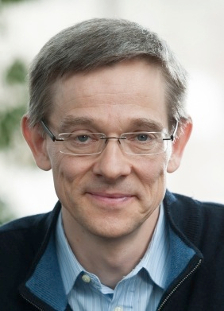
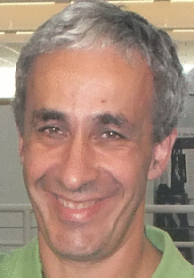

the Netherlands Conference on Computer Vision
Topics include, but are not limited to:
Early and Biologically Inspired Vision Color and Texture Segmentation and Grouping Computational Photography and Video Motion and Tracking Shape-from-X Stereo and Structure from Motion Image-Based Modeling Illumination and Reflectance Modeling Shape Representation and Matching Object Detection, Recognition, and Categorization Deep learning Video Analysis and Event Recognition Face and Gesture Analysis Statistical Methods and Learning Performance Evaluation Medical Image Analysis Image and Video Retrieval Vision for Graphics Vision for Robotics Vision for Internet Applications of Computer Vision
This list of topics is non-exhaustive. In case of any doubt about whether your topic is appropriate for presentation at the conference, please contact the program chairs.
Max-Planck-Institut für Informatik (MPI)
Personal Website; Profile on Google scholar
École polytechnique fédérale de Lausanne (EFPL)
Personal Website; Profile on Google scholar

Track A: Type A contributions present new unpublished work in a paper of 4-8 pages.
The papers will be peer-reviewed by the program committee.
In case of acceptance, NCCV does not claim copyright of the paper, so you are free to re-submit it elsewhere after NCCV.
Track B: Type B contributions are abstracts (2 pages max.) of work that was previously published
in another peer-reviewed computer-vision venue (CVPR, ECCV, ICCV, IJCV, IEEE TPAMI, IEEE TIP, IEEE TMI, MIA, IPMI, MICCAI etc.).
Abstracts are used to determine the final program of the conference.
To ensure a high quality of the conference and to reduce reviewer load, we particularly encourage the submission of type B papers.
All contributions will be published on the NCCV website, but no copyright will be claimed.
The program committee will decide on which (A and B) contributions to selected for an oral presentation, and which ones for a poster presentation.
Submission Instructions
Papers and abstracts can be submitted via CMT. Style files and further submission instructions are available here.
The conference centre is located on the Paul Westhofflaan 2 in Lunteren, The Netherlands. The conference venue is located in a splendid natural environment.
Follow the following directions.
Lunteren train station to Conference Centre De Werelt: Monday between 11:00 and 12:15 Conference Centre De Werelt to Lunteren train station: Tuesday between 12:45 and 13:15
From the train station in Lunteren, you can also walk to De Werelt along the paved road or via a forest path.
Walking from Lunteren station to De Werelt takes approximately 15 minutes.
Full registration packages includes two lunches, a borrel, dinner, overnight stay, and breakfast.
At least one author of each accepted paper is required to register for the conference.
The total number of participants is limited because of space constraints, so please register early!
| Type | Cost |
|---|---|
| ASCI Full Registration | €70 |
| Academic Full Registration | €150 |
| Industry Full Registration | €250 |
| Academic Day pass: 12 Dec (+lunch, borrel, dinner) | €100 |
| Industry Day pass: 12 Dec (+lunch, borrel, dinner) | €180 |
| Academic Day pass: 13 Dec (+lunch) | €80 |
| Industry Day pass: 13 Dec (+lunch) | €100 |
Program Committee:
Hamdi Dibeklioglu, Delft University of Technology Thomas Mensink, University of Amsterdam Ronald Poppe, Utrecht University Theo Gevers, University of Amsterdam Gertjan Burghouts, TNO, NL Gwenn Englebienne, University of Twente, NL Peter De With, Technical University of Eindhoven, NL Emile Hendriks, Delft University of Technology, NL Hayley Hung, Delft University of Technology, NL Bouke Huurnink, The Netherlands Institute for Sound and Vision, NL Inald Lagendijk, Delft University of Technology, NL Marco Loog, Delft University of Technology, NL Wiro Niessen, Erasmus University Medical Center, NL Johan Oomen, The Netherlands Institute for Sound and Vision, NL Eric Postma, Tilburg University, NL Marcel Reinders, Delft University of Technology, NL Hichem Sahli, Vrije Universiteit Brussel, BE Albert Ali Salah, Bogazici University, TR Klamer Schutte, TNO, NL Nicu Sebe, University of Trento, IT Jan Sijbers, University of Antwerp, BE Arnold Smeulders, University of Amsterdam, NL Cees Snoek, Qualcomm / University of Amsterdam, NL Robby Tan, National University of Singapore, SG Emrah Tasli, Booking.com, NL David Tax, Delft University of Technology, NL Tinne Tuytelaars, Catholic University of Leuven, BE Jasper Uijlings, University of Edinburgh, UK Roberto Valenti, SightCorp, NL Michel Valstar, University of Nottingham, UK Joost van de Weijer, Universitat Autònoma de Barcelona, ES Laurens van der Maaten, Facebook, US Raymond Veldhuis, University of Twente, NL Remco Veltkamp, Utrecht University, NL Max Welling, University of Amsterdam, NL Marco Wiering, University of Groningen, NL Marcel Worring, University of Amsterdam, NL Zoran Zivkovic, Intel, NL